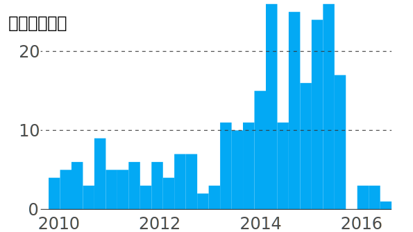
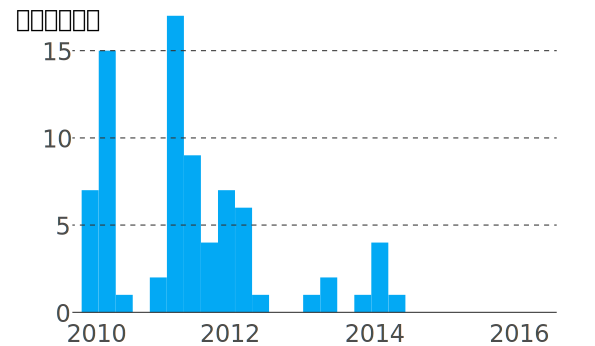
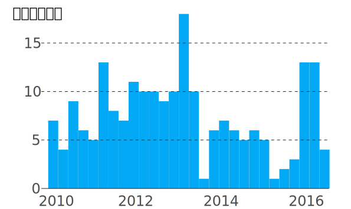

地圖上的紅點，是國際海事局（IMB）紀錄的海盜事件，時間介於2010-2016年第3季。原本IMB報告裡共記載2,056起海盜事件，刪去沒有經緯度的條目後，地圖上共有1,876起海盜事件。
可以看到，紅點主要集中在三大地區：「 馬六甲海峽」、「亞丁灣」和「幾內亞灣」。
由於作為歐亞貿易路線中繼站，加上航道狹窄，馬六甲海峽一直是海盜熱點。地圖上紅框框起來的地區約有540起海盜事件，佔總數的近三成。
其中，新加坡周邊海域的海盜活動特別密集。統計新加坡周邊海域的海盜事件後，做成下面的逐年累積圖，可以看到海盜活動在2015年攀抵高峰。
東非海域是另一個海盜活動猖獗的海域，其中亞丁灣是全球石油貿易的重要航線，波斯灣石油國的石油，主要通過亞丁灣運往北美及歐洲。
這些值錢的貨物，引來了以索馬里等東非國家為根據地的海盜。
曼德海峽是東非海盜最愛下手的海域之一。下面的長條圖統計了曼德海峽海域的海盜活動：海盜活動在2011年後逐漸減少，2014年後該海域幾乎沒有出現海盜活動，顯示歐美艦隊加強力道護航收效。
隨着西非石油產業蓬勃發展，西非石油航線起點幾內亞灣湧現海盜活動。我們統計了紅框的海盜活動，結果如下：2016年幾內亞灣海盜活動激增，成為全球海盜問題最嚴重的海域之一。
根據IMB的資料，2010-2016年第3季，在台灣註冊的船隻被海盜攻擊的次數是7次（地圖上的紅點，有兩個點被蓋在其他紅點的後面，放大地圖就看得到了），其中3次海盜僅止於對船隻開火，4次船隻遭狹持。
地圖顯示，台灣船隻遭遇的海盜事件中，2件發生在南海，其他5件發生在印度洋。
部分海盜事件發生地點距離陸地相當近，靠近中國的天津、青島等黃海沿岸港口，都曾發生商船遭搶劫事件。這是由於部分海盜鎖定停泊在「港外錨地」的船隻作案，港外錨地設在港外，供船舶在進港前停泊等待引航或接受海關、邊防檢查以及檢疫。錨地案件常發生在海上大霧導致能見度下降的時分。
讀者可以縮放地圖，觀察全球海盜活動的分佈情況。